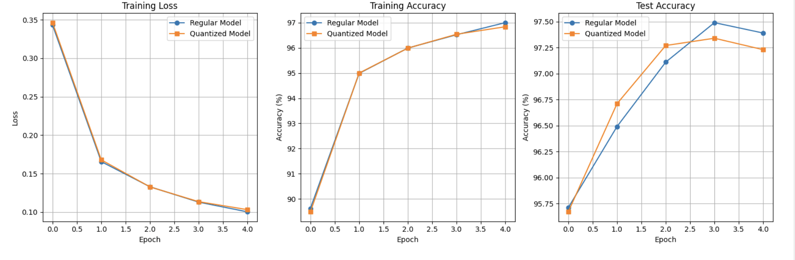

I've had to take a break for the last few days because of my parallel programming exam but I'm back to this now. I decided to start small with a simple model made up of only linear layers. So, I made a model that is only 3 layers for MNIST to compare how the quantized layers do vs regular linear layers. So I trained it, and the difference is pretty much negligible. I'm still using QAT, which means you do quantization -> dequantization -> forward pass -> quantization -> dequantization -> backward pass. This means that the actual matmul still happens as floats. Even if I fold the scaling factor into the weights it still needs to be dequantized. I'll move on from here. Not having FPGALLM rely on this working anymore takes some of the pressure off and I can do both of them simultaneously. Anyway, it seems that QAT works, I do want to see if it scales up but I should also see how to get the int only stuff to work.
SmolLM2-135M QAT
Afternoon: I had a dream last night where I called myself stupid. I did some stuff right, like deciding to use embeddings for the positions instead of something like RoPE, because LUTs are easy to implement, but I also dumbed down the quantization a lot, for no reason (I think). Here is the thing...the goal is to have a model that requires no FLOPS at inference time. How AQT does this is by quantizing and dequantizing the weights while training. This allows the model to create weights that are robust to quantization, while still being floats. It is important that they are floats because torch does not allow you to train models (really to store gradients) for non float (and imaginary) tensors. So, to quantize the weights you multiply by a scale factor, round to the nearest integer and clip to whatever scale you want (depending on the number of bits in the integer, I'm doing 8 bits so -127-128). After clipping, you end up with floats that are only integer values. You can then divide by the scale factor, and you are back to having floats. THe forward pass is performed with these quantized + dequantized floats. The issue is that rounding is not a differentiable operation. So, to allow gradients to flow back they use straight through estimators in AQT (I'm doing the same). What that means is that you basically allow the gradients to flow back unchanged. Cool. I did some very stilly stuff and some less silly stuff. The first thing, is I set the scale to be 1/128 and it is uniform for every layer. Based on some reading, people apply different scale factors either per tensor or per channel. I decided not to do that, and to use 1/128 instead because it's a power of 2 so I can do it with bit-shifting on the FPGA. Except, I will never be doing the scaling on the FPGA. I will be using the quantized INT weights on the FPGA. So, I've been applying this horrible scaling for no reason. I also removed the zero point entierly to keep things simple, but all the quantization is performed in torch, so there was no need for me to effectively lobotomize the model like this. The other, less silly thing is that I am using ReLU instead of GeLU. Here is the thing, with 16 bit activations, there are 2^16 possible values. So, I could just lean into LUTs more, and just have a GeLU look up table. The same applies to SiLU or any other activation function. It isn't even much memory (Like 125 KiB and I can just store it in B/URAM). I stopped training really late last night because the loss wasn't decreasing enough. Hopefully these changes help.
Afternoon: I've started training my own model. I created custom int only classes for everything. I figured that this would be the easiest to actually implement on the FPGA because I'll be able to walk through each step of the model, tracking things myself. I know that you can do this even with models loaded in with AutoModelForX but I kind of just wanted to do it myself. I'm following a similar strategy to what they do with AQT. I have straight through estimators which allow me to round the weights while still having them be differentiable. Training on the 5M sample dataset. I'll see how many tokens it is at some point. Maybe around 50M? I'm currently training with only 2 layers (60M parameters)to make sure that everything is working. I'll step it up to 30 layers (~135M parameters?) as soon as this is done. I'm not expecting anything from the 2 layer model, but as long as the 30 layer one can generate coherent text I'll be happy. I've also restricted the context length to 256 because I don't want to go much further on the FPGA. If this does something cool I'll get into properly training a much bigger model with more data. Love paying for my own compute! Maybe I should use some AWS credits for this.
Later in the afternoon: I realised I was saving the model every 1000 steps which will fill up my disk well before training is done. So, I had to stop it. I also realised that with a batch size of 32 this will take 8 hours to run on the A40. I'm going to run it on the colab A100 to see how much faster it's doing there. It is currently 4:23 PM here. it is at step 3000, train loss is 9.438. 5:10 PM now, 13.5K steps in and train loss is 9.26, so something is happening. Unfortunately, I realised that I am using SiLU, which obviously is not int friendly. I'll swap it out for ReLU. I'm not stopping this run though because I want to see how the model performs. It'll get saved after 20k steps so I'll see then. There is still a lot to do between now and full int deployment. Based on some quick math this run will take 10 hours. That's with only 2 layers. So, if I want to do this with 30 layers then that's a problem because quantization errors will snowball the deeper the model goes. However, I was thinking about ~100M parameter models and I remembered that the smallest GPT-2 was 117M parameters. The better part is that it is only 12 layers. It's vocab size is about the same, with a d model of 768. So, I'm going to use the GPT2 arcitecture to base this on, not SmolLM2. Basically what that means is I will use the GPT2 tokenizer, 12 layers, a learned position embedding matrix ('m actually already doing this because I couldn't get RoPE with just ints). I'm going to use ReLU instead of the Gelu that they use. GPT2 doesn't use GQA but I will, well because it's already implemented. With a d_model of 768 I'm thinking head_dim of 64 (same as SmolLM actually), 12 query heads, 4 KV heads? Let's see. I'll put this together. I also think I'm going to bite the bullet and pay for an A100. I need this to go quicker. I've also done a lot of stuff to make my life slightly easier, like the scale for all the quantization stuff is 1/128 rather than a learnable parameter. Oh well.
Evening: Set up the GPT2 model. I started a training run, looks like it will take 5 hours (I've stepped up the batch size to 64). But, I decided to save the tokenized dataset instead of having to tokenize it every time, so that's running now. Then I'll start the training process and see how it goes. Hopefully, if this gets done by tonight (can generate text) I'll go back to the FPGA stuff and have that done in a week or so. I'll revisit this for sure. There is a lot of interesting stuff for me to explore here that I'm excited about. Anyway, better to focus on one thing at a time.
Evening: I moved over to RunPod. Colab is fine, but the A100s they have are only 40GB, so with 80GB I can have a bigger batch size. Also, I don't keep losing temporary stuff on RunPod because I created a new nework volume. While creating the dataset, I was thinking why am I writing every example? I could just do it in batches, and that will probably save me a bunch of time. I was right. Writng in batches of 10K samples now and its like 2-3x faster. Once the 5M dataset is done I'll start AQT. I'm using 4 bit weights with 8 bit activations because that is the example they showed on their website. I'll see where to go from there. Also, I was reading the tinygrad docs. They implement 3 kinds of operations, ElementWise, Reduce, and Movement. From this, they are able to implement everything. I could take a similar approach for FPGALLM, but I'll cross that bridge when I come to it. I'm going to start with with the Llama example they have and explore that. The embeddings are not quantized, but I believe they get quantized in the decoder layer. If that's true, I can just skip that and store the quanitzed one. I'm not sure if this is correct though. Let's see how this works. Should I just train my own completely INT model?
Night: Okay so I couldn't find any integer only language models that have no fixed point stuff going on either. I'm going to train one tonight. I want to see first hand why people don't do it. Before jumping into this I looked up some papers on int only training. They use activation functions that are approximations, and they use DFA instead of backprop. Will be interesting to see what's going on.
Morning: So, it turns out that the dataset never got saved to my drive. I left the generation script running overnight, and though I could see the file on colab, it never got saved to my drive. So, I've just been trying to figure out what went wrong all morning. I've run it a few times after that, and it got up to 100K samples and still got saved. While the script is running I don't see anything in my drive, but I do see it in colab. After interrupting the script, it takes a little bit but it eventually shows up on Drive. After the stuff finished executing last night I disconnected the runtim almost immediately. So, I am not sure if they store files temporarily while they are open on colab, and then persist them to drive only after, while the runtime is still running. I'll stop running once the current run gets to like 1M samples and start working on the INC stuff. I'll run a full 5M run while doing all of that.
Afternoon: Okay I'm pretty sure my hunch was correct, and the reason it didn't get saved to my drive is because I disconnected the runtime immediately after the script was done running, and drive does not constantly persist to drive. It also turns out that the stuff I was looking at for INC was old. INC 2.0+ is much easier to use, no yaml files. Currently tokenizing the 1M dataset. It was taking really long so I restarted it with batching and num_proc = 11. It's going ~8x faster now, which will be especially helpful when I use the full 5M dataset.
Later In The Afternoon: So it turns out that INC doesn't support NVIDIA GPUs or TPUs. That means that this is not scalable at all. I do want to see what the output of this whole process looks like though to make sure that I am not msising anything. So, I am going to run INC QAT on the 1M dataset anyway. After that works, I'll move over to torchao. I've been thinking about maybe doing this from scratch. From what I understand, they basically wrap any floating point operation in a quantize + dequantize operation. You then perform the matmul and quantize + dequantize the result. The model learns weights that are more robust to quantization. At inference time, you quantize your weights and perform all the operations in int8.
Evening: I ditched INC. Not having GPU support is insane, so I am now using torchao. This is also quite esay because I'm only running it on 1 GPU, I don't need much more because my model is only 135M parameters. But, I think I would like to set a loftier goal, and I would like to work with Llama 3.1-8B. Anyway, I'll work my way up to that through the SmolLM models. I've started with 135M, then I'll go to their 1.7B model and then Llama 3.1 8B. That should introduce a whole host of issues, so something to look forward to I guess. Anyway, this is running now, I'm waiting for it to finish the 1M dataset before I move onto the 5M one. I've been running this on an L4 while debugging everything. Time to move to an A100.
Night: It's 3 AM here in champaign, and I've finally made it far enough into FPGALLM to start working on QAT. I remember reading Character AI's post that malhar sent about how they serve all their users. They wrote about how they natively train in int8. They still do some dequantization because they aren't compute bound, but their requirements from their models were very differnet from my own, they actually needed their models to be good. I don't really need that for FPGALLM, but hey I get to learn about quantization and let's be honest, it's so much cooler to have real weights. So the reason this is it's own mini-project is because I think it's cool and different enough to deserve it's own project, and FPGALLM doesn't need this at all actually. I've already got a script that will create a dataset for me.That's probably the easist part though. I read Nvidia and Pytorch's guides on QAT. It seems like it should be fairly straightforward but I don't want to make the mistake of getting ahead of myself again. I also haven't worked on colab for a while, so I'm excited to see what they've done with their Gemini integration. The goal is to create a version of SmolLM2-135M that requires no flops.
Later In The Night: It is now almost 4. I was running the data generation script, which is taking quite long because it has to download, clean, and save 5 million examples. I forgot to connect to Google Drive before getting half way through, so when I disconnected to connect to a GPU runtime I would have lost all my progress. So I had to restart. Not the best start to this honestly. Anyway, it's saving the dataset to my drive now. Also, I'm not sure if I'm doing something wrong, or Gemini integration is just not finished for Colab yet, because it can't seem to access files in the runtime? Like I asked it to look at the dataset generation script for something, and it said it can't access it. Not sure what's going on there, but hey it's a start. I think I'm going to stop running the dataset generation will before the 5 million samples anyway. I don't want great performance, and I also don't need really long sequences of text because I don't want to have to start off by dealing with such large matmuls anway. It's at 500K right now, I'll let it get to a million and then stop probably. I can always add more later if I need them.
Even Later In The Night: I think I've been going about this the wrong way. I'm excited about the FPGALLM stuff, which is why I want to get through this as quickly as possible, and I've been saying I don't need fantastic performance. But, the point of doing this whole thing was to get comofrtable with QAT. So, if anything, I should work on getting the best performance out of the quantized model. I was thinking about this when the data gen script was running, so I'm letting it run all the way . I will train on 5 million samples. While waiting for it to run, I was talking to ChatGPT about QAT. Turns out, Intel has this thing called neural_compressor, which allows you to perform QAT the model from a single yaml file. It does everything for you, including finding the optimal hyperparameters. I think I'm going to start with INC and see how it goes. Finally I'd want to do something a little more hands on, but let's see how this goes first. 4:30 now, and about half way through data gen. Thank god for Google One.